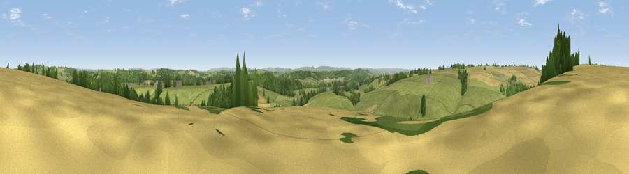

Viewpoint near Poyntington
#23003 in England · top 47% of its area beats it · near PoyntingtonThe view, rendered

A 360° render of this exact spot computed from the terrain model, tree cover and land cover — summer colours, afternoon light, calibrated against photographs of famous viewpoints. Real trees, hedges and buildings will differ in detail.
The panorama
Grey silhouette: terrain skyline in each direction (720 bearings, Earth curvature and refraction included). Dashed green: skyline with trees (+15 m) and buildings (+8 m) as obstacles. Blue strip: how far the ground is visible on each bearing.
Where the view opens
Wedge length = distance to the farthest visible ground on that bearing (vegetation-aware). Rings at 10, 25 and 50 km.
What fills the view
69% grassland · 17% woodland · 14% cropland ·
Angular shares of the visible panorama (visual magnitude), not map area. Landscape diversity 0.37 (0–1 Shannon).
Key numbers
More beautiful places nearby
The staircase of upgrades: each row has a higher view potential than everything closer. Driving times are estimates from straight-line distance, calibrated against real road routing — check an actual route before setting out.
| Place | Direction | Drive | Score |
|---|---|---|---|
| Viewpoint near Poyntington | NNW · 1 km | ~3 min | 50.5 |
| Round Hill | W · 3 km | ~8 min | 70.4 |
| The Beacon | NW · 5 km | ~10 min | 75.8 |
| Viewpoint near Lamyatt | N · 16 km | ~29 min | 77.8 |
| Viewpoint near Berwick St John | E · 27 km | ~43 min | 78.2 |
| Viewpoint near Hewish | WSW · 27 km | ~43 min | 78.5 |
| Viewpoint near Nettlecombe | SSW · 27 km | ~44 min | 79.3 |
| Viewpoint near Askerswell | SSW · 28 km | ~44 min | 81.7 |
50.97502, -2.48742 · source: screening · position refined by local search. Computed location — check access rights before visiting.